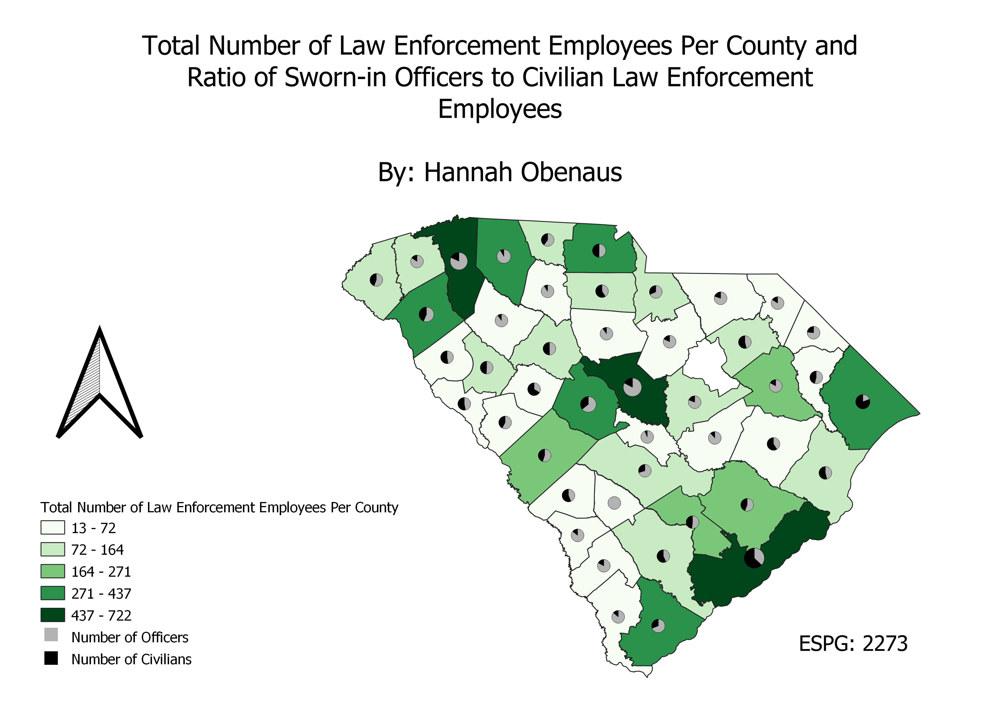

Homework 9: Chloropleth and Proportional Symbol Map
This map displays a chloropleth of the total number of law enforcement employees in 2019 by county. It also shows the ratio of sworn-in officers to civilians within that total number of law enforcement employees. This is displayed with the pie chart. Some examples of civilian law enforcement employees that are dispatchers and correctional staff.

Data used for this project
CSV dataset
Link to shapefile